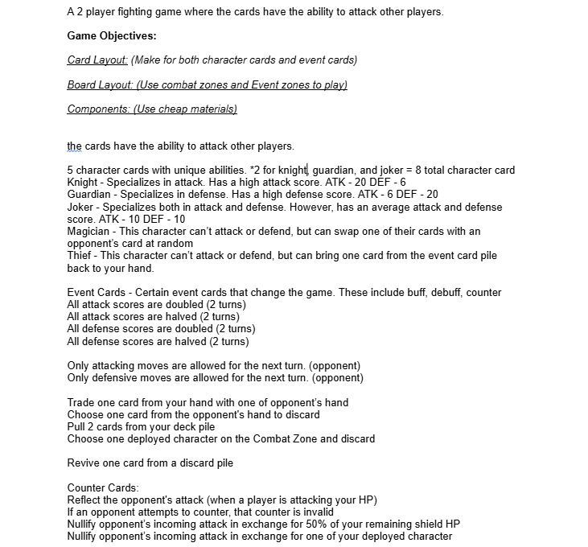
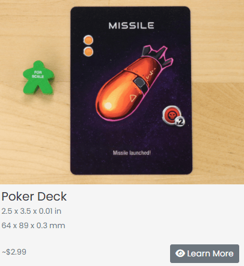

Card Clash


Card Clash is a personal card game that is developed on the digital platform Tabletopia. In this two player game, players must dominate their opponents completely by strategizing and bringing out their inner beast to cause chaos in the battle arena! Become a commander to lead the team to a complete victory by taking time to strategize and understand the situation before making your move.
• Solo Project
• Role: Game Designer
• Built in Tabletopia / Figma
• 3 Week Development

In the first step in the pre-production phase, I documented my initial gameplay ideas and mechanics to help organize my thoughts before going into the actual development. This involved planning out game objectives such as card, board layouts and components that needed to be used. Also writing initial ideas for different card types and its effects were a important part of brainstorming.
Writing down these concepts and ideas helped me explore various gameplay possibilities while gradually clarifying and developing them further in the later stages of the design process.


One of the biggest challenges of the project during the pre-production stage was to design a game that could be made within very limited resources. As the project had specific constraints regarding costs, it was important for me to think about the materials and components that could be made within those constraints and yet provide an interesting gameplay experience.
In order to gain a better understanding of the realistic costs of production, I used The Game Crafter's component catalog to research the costs of common components for tabletop games to select and choose ones that would best fit for the prototype.
©2024 by Shion Lovelace.
All content, logos, and trademarks are the property of their respective owners.